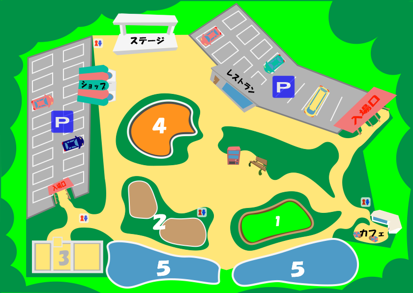
名前の通り動物とふれあえる広場です。北海道の広大な土地の関係か、人懐っこい仲間ばかりなんですよ。触るときは、同じ目線で合わせて下から手を出していくと、より懐きやすくなります。
エゾリス
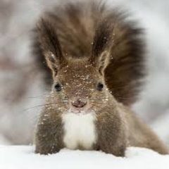
エゾリス（さなえ） アイヌ語：ニウエオ 属性：リス科リス属キタリス種の亜種 エゾリスは現在北海道全域の、平野部から高度1700mくらいまでの樹林帯にまで幅広く生息しています。普段は他のリスと同様に昼に単独で行動し、クルミやヤマブドウなどの木の実や花や、樹液、昆虫などを食べます。エゾリスの特徴として冬は冬眠せず、冬に備えて木の実などを地面に埋めておく習性があります。野生のリスだと平均5年程度の寿命なので、飼育下でどれだけ寿命を伸ばせるか現在研究中です。
エゾナキウサギ
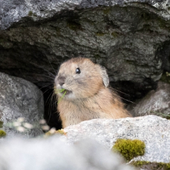
エゾナキウサギ（サトシ） アイヌ語：不明（一説にはクトロンカムイ） 属性：ウサギ目ナキウサギ科の哺乳類 エゾナキウサギは、元々噂だけで存在しない生物とされていましたが、1928年に北海道の置戸町で最初に発見されました。昔は名前がなかったので、アイヌの人たちはチチッ・チュ・カムイ（チチッっと鳴く神様）と呼ばれていました。ここまで見つからなかった理由として、800m以上の高度にしか生息していなく、15度以上の気温には対応できないからでしょう。そのため普段は、岩と岩の間に隠れて生息しています。
エゾモモンガ
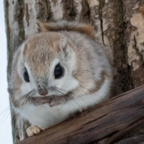
エゾモモンガ(アユミ) 属性：ネズミ目リス科モモンガ属の亜種 アイヌ語：アッ・カムイ エゾモモンガは、海外では多数生息していますが、日本では北海道の平野部のみに生息しています。札幌市の森林にも住んでいるので、ICカードのKitacaにもデザインとして使用されています。特徴は、なんと言っても吸い込まれるような大きい目、その愛くるしさから爆発的な人気になりつつあります。うちの看板娘に是非触れ合っていってください。
陸上エリアには現在エゾシカとキタキツネしかいませんが、これぞ北海道の動物という２頭です。餌を求めて街に来ることはありますが、普段は非常におとなしいんですよ。自然を大切にすることによって、人間ともっといい共存関係を築いてほしいとezoo飼育員一同心から思っています。
エゾシカ
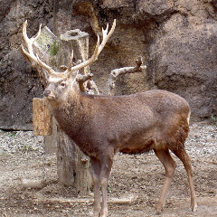
エゾシカ（カンタ） 属性：シカ科シカ属の亜種 アイヌ名：ユク エゾシカは北海道各地で生息していますが、明治時代に入ると大雪と乱獲により、絶命の危機に瀕していました。その後保護や気候の回復により、今度は個体が増えすぎて農作物の被害を及ぼすようになりますが、性格は臆病なので人を襲うことはありません。特徴としては跳躍力が非常に優れていて、2mの柵を超えることも珍しくありません。
キタキツネ
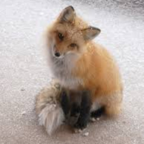
キタキツネ（ダイスケ） 属性：ネコ目イヌ科キツネ属の亜種 アイヌ名：チロンヌプ、スマリ キタキツネは、北海道の全域の平野部に生息しており、北海道観光をする方は、餌を求めて街に現れるのを見るのが珍しくありません。見た目はかわいらしいキタキツネですが、触るとエキノコックスにかかる可能性があるので大変危険です。また、餌をあげると個体数が増え、生体系に異常が起こってしまうので、現在北海道観光では餌を与えないように呼び掛けています。
北海道にしかいないヒグマはもちろん、2019年5月から全国の動物園で唯一飼育されているエゾオオカミも仲間に加わりました。見つかったエゾオオカミは、まだ幼いので両親が見つかるかもしれない期待がありますので、今後にどうぞご期待ください。
ヒグマ
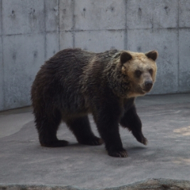
ヒグマ（たけ蔵） 属性:ネコ目クマ科クマ属の哺乳類 アイヌ語：キムンカムイ 日本にはヒグマとツキノワグマが生息していますが、ツキノワグマは北海道以外の全国に生息しており、ヒグマは北海道だけに生息しています。体長は2～3m、体重は500キロまで達し、アラスカに生息するヒグマは1000キロを超える個体もいます。軽トラックが約750キロですから、想像すると計り知れない大きさです。
エゾオオカミ
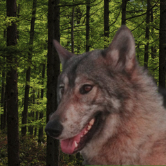
エゾオオカミ(不死鳥太郎) 属性:ネコ目イヌ科イヌ属の亜種 アイヌ語：ホロケウカムイ エゾオオカミは、かつて北海道全域に生息していたオオカミでしたが、約100年前に絶滅したとされていました。しかし、2019年の2月にエゾオオカミが発見され、我がezooで飼育することとなりました。全長は尻尾を合わせると、160㎝ほどになるといわれていましたが、現在研究中です。北海道大学の植物園の博物館に全国で唯一剥製も飾られています。
鳥エリアには、現在ezooにいる鳥の全部が絶滅の危機にさらされています。日々数を増やしていけるように努力しつつ、来場していただいたお客様にもっと大切さを知ってもらおうと、触れ合える機会も設けております。写真撮影などを存分にしていってもらえたら幸いです。
シマフクロウ
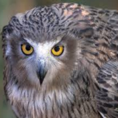
シマフクロウ（ガンコ） 属性：フクロウ目フクロウ科シマフクロウ属の鳥類 アイヌ語：コタンコロカムイ シマフクロウは現在北海道のみの生息で、約150羽ほどしかおらず絶滅危惧種に指定されています。個体差や寿命はかなり大きく約30年前は60羽ほどしか生息していなかったことからも、ストレスにかなり左右されると考えられます。
エトピリカ
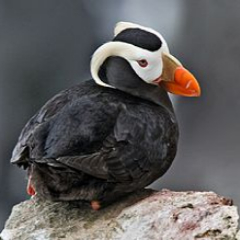
花魁鳥（ミッチ） 属性：チドリ目ウミスズメ科ツノメドリ属の海鳥 アイヌ語：エトピリカ エトピリカは、限られた地域にしかおらず、現在北海道の主に道東にたまに見られる程度です。1960年頃を境に減少し続けており、国内希少野生動植物種に指定されて色々と対策をしている最中です。最大の特徴は、冬は冬羽は全体的に暗く、くちばしの根元も黒っぽい色で飾り羽もないのに対して、夏は繁殖期で異性をアピールするために、顔は白く、くちばしの根元はきれいな黄色に染まり、飾り羽も発達します。
タンチョウ
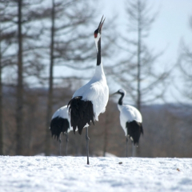
タンチョウ(せつ子) 属性：ツル目ツル科ツル属 アイヌ語：サルルンカムイ 赤い頭が特徴で、赤を意味する丹と頭頂部の頂から丹頂と呼ばれるようになりました。千羽鶴を折って長生きをということが昔から親しまれてきましたが、実際の寿命は平均で20～30年といわれています。タンチョウは、現在国内希少野生動植物種に指定されていて保護を行っていますが、数が増えすぎても農作物を荒らしてしまうので、数の調整は今後の課題となっています。
オオワシ
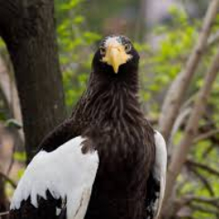
オオワシ（雄一郎） 属性：タカ目タカ科オジロワシ属の鳥類 アイヌ語：カパッチリカムイ 世界では２５万羽ほど生息していますが、日本では現在1000羽に届かないくらい絶滅の危機に瀕しています。ワシは、体重の半分が筋肉でできており、握力は約100キロほどあります。その握力と筋肉を武器に強力な鉤爪で獲物を捕らえます。飼育下におけば50年程生きる個体も存在したとされる資料が残っているほど長生きできる個体です。
海洋エリアには、飼育しやすく馴染みやすい3種類がおります。迫力がすごいシャチと似ているオットセイ、アザラシがいます。現在トドを加えて、アザラシ、オットセイとともに似ている3人衆として売り出そうか検討中です。
シャチ
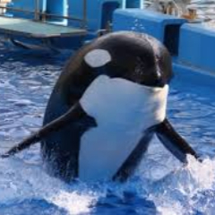
シャチ（オセロ） 属性：クジラ目マイルカ科シャチ属の海洋生物 アイヌ語：レプンカムイ シャチは、日本では北海道の知床の近海と和歌山県の近海に主に生息していますが、人間の次に広範囲と言われるくらい世界中の海に分布されています。知能はかなり高く、普段から群れを成し、サメに襲われても仲間たちで守り、捕食もしたという事例もあり、海の中では天敵はいないといわれています。唯一の弱点は、単独だとストレスがたまり、通常50年～90年の寿命ですが30年程度になることです。
オットセイ
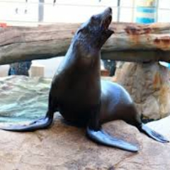
オットセイ（リュウタ） 属性：ネコ目アシカ科ミナミ・キタオットセイ属鰭脚類 アイヌ語：オンネプ オットセイは二種類に分けられていて、北と南によって呼び名が変わり、それらを通称してオットセイといい、北海道では主に道西の日本海に生息しております。泳ぎがとても上手で、水中を時速25～30kmほどのスピードで自在に泳ぐことができ、約15分の潜水もできます。アザラシとはよく似ていますが、見分け方はアザラシの欄に記載しました。
アザラシ
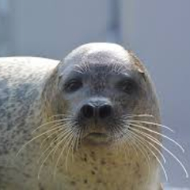
アザラシ（ココ） 属性：ネコ目アザラシ科の鰭脚類の中の海棲哺乳類 アイヌ語：トッカリ アザラシは、犬や猫と同じくミアキスという哺乳類の祖先に持つとされています。世界中で生息してはいますが、生態はまだまだ解明されていない現状です。性格は大変好奇心が強く、人間に対しても友好的です。オットセイとの見分け方は、オットセイは前肢で推進しながら後肢で舵を取るのに対して、アザラシは後肢を左右に動かすことで推進していくので、是非実際に見て見分けてみましょう。
・レストラン「ezooっ子」
10:00〜閉園まで営業
【64席】
ezooっ子では、定番メニューはもちろん、ここでしか食べられないようなメニューを多数そろえています。
スタミナをつけて動物たちを見に行こう︕
| メニュー | 価格 | 内容 |
|---|---|---|
| 蝦夷ラーメン | 800円 | 鹿肉をチャーシュー代わりに使用して醤油ベースで作りました |
| ヒグマラーメン | 1000円 | どんぶりを覆いつくしたチャーシューを乗っけた味噌ベースのラーメンです |
| キツネうどん | 500円 | キツネの形をした揚げを乗せダシと麺にもこだわりました |
| 親子プレート | 1500円 | オムライスとカレーと焼きそばを家族みんなで食べられるボリュームにしました |
| ジンギスカンセット | 1300円 | ジンギスカン150ｇ 各種野菜 ライスの量自由 |
| スペシャルスタミナランチ | 3000円 | 鹿ステーキ（200ｇ）とガーリックライス、高麗人参スープ、スッポンドリンクのスタミナのために考えられたスペシャルメニューです |
| ※ラストオーダーは、閉園30分前です | ||
・カフェ
「planet with a drink」
9:30〜閉園まで営業
【48席＋休憩スペースあり】
自然をバックに、ゆっくり休憩はいかがでしょうか︖planet with a drinkでは、各種ドリンクと軽食を用意しています。
さらに黒糖タピオカを新登場として追加し、パワーアップして営業していますので、是非お立ち寄りください。
| メニュー | 価格 | 内容 |
|---|---|---|
| 黒糖タピオカ | M 500円 L 600円 |
台湾から直接仕入れた茶葉とタピオカをおいしく加工しました。 |
| ドリンク各種 | M 300円 L 400円 |
コーラ / メロンソーダ / アイスコーヒー / アイスカフェラテ / オレンジジュース /アイスティ / ホットコーヒー / ホットティ / ホットカフェラテ |
| フライドポテト | 300円 | シンプルisベストです |
| ザンギ5個 | 500円 | 北海道といえばのメニューです |
| たこ焼き串 | 400円 | 持ち運びやすいようにたこ焼きを串にしました、中はふわふわとろとろですよ |
| フライドポテト＋ザンギ6個 | 800円 | シンプル＋北海道の定番メニューの組み合わせ、揚げたてはおいしいべさ |
| ゴマアイス | 400円 | アザラシ模様のビジュアルを意識しながらおいしく仕上げました |
| 期間限定タイムズスクエアアイス | 500円 | 札幌のお土産でおなじみの札幌タイムズスクエアの味をそのままアイスにしました |
| ※ラストオーダーは、閉園30分前です | ||
・ショップ「ミアンゲ」
9:00〜閉園まで営業
【休憩スペースあり】
ミアンゲでは、子供から大人まで楽しんで貰えるよう多数のグッズを販売しています。
休憩スペースもあるので、お休みがてら是非お立ち寄りください。
この動物園でしか買えないオフィシャルグッズがたくさんありますよ。
| おすすめ商品 | 価格 | 内容 |
|---|---|---|
| ezooロゴタオル | 1000円 | 種類は2種類、当店でしか売られていないので記念にどうぞ～ |
| 蝦夷べこ餅 | 6個 600円 12個 1000円 |
北海道発祥のべこ餅を蝦夷動物園風にアレンジしています |
| ニホンオオカミ饅頭 | 12個 600円 24個 1000円 |
中に餅と餡がつまった美味しさ満点の饅頭です |
| 蝦夷・ひぐまラーメン | 1500円 | 各3食ずつ入った当動物園の名物土産‼ |
| なまらすごいべさ | 2500円 | ezooタオル(2種類)と蝦夷ラーメン(2食)orヒグマラーメン(2食)、ニホンオオカミ饅頭(12個)or蝦夷べこ餅(6個)のお得セット！ さらには券を引いて何かが当たるダブルチャンス‼ |
| ・その他、各種取り揃えております。 缶バッジ/マグネット/クリアファイル/ポストカード/特製ボールペン/トートバッグ/選べるキーホルダーなど、詳しくは店頭で直接ご覧ください。 |
||